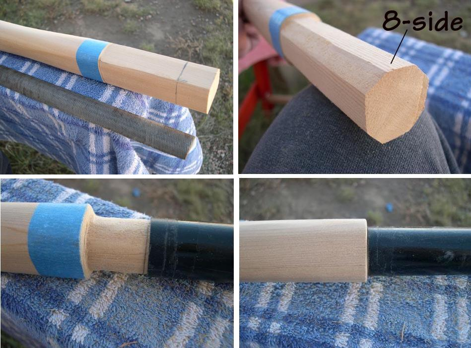

| Take-Apart Paddle Construction | Menu Previous Page Next Page |
|
 Use a file to 8-side the 1.25in. square ferrule insert section created before the paddle was cut in two. After 8-siding, use the file to to round the 4in. ferrule insert until it is close to the Inside diameter (ID) of the ferrule. A larger diameter aluminum tube would require less wood removal. Trial fit the ferrule by sliding it on the ferrule insert a little at a time while continuing to file down the insert. Work to achieve a snug sliding fit. Constantly check the alignment of the ferrule insert by sighting down the top, sides, and bottom of the loom. Make corrections as needed. The loom to ferrule transition must now be tapered. |
|